Isaka Cotaro
BOOK
오듀본의기도 [オ一デュボンの祈り]


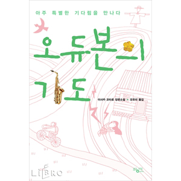
- 원서
- : 2000/12 (新潮社), 2003/11 (新潮文庫)
- 번역
- : 2006/11/30 (황매)
- 옮긴이
- : 오유리
- 페이지
- : 483쪽
러시라이프 [ラッシュライフ]
- 원서
- : 2002/07 (新潮社), 2005/04 (新潮文庫)
- 번역
- : 2006/05/18 (한스미디어)
- 옮긴이
- :
- 페이지
- :
명랑한갱이지구를돌린다 [陽氣なギャングが地球を回す]
- 원서
- : 2003/02 (祥伝社), 2006/02 (祥伝社文庫)
- 번역
- : 2007/03/06 (은행나무)
- 옮긴이
- :
- 페이지
- :
중력삐에로 [重力ピエロ]

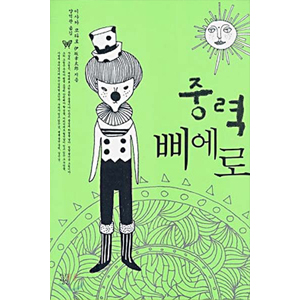
- 원서
- : 2003/04 (新潮社), 2006/06/28 (新潮文庫)
- 번역
- : 2006/05/30 (작가정신)
- 옮긴이
- :
- 페이지
- :
집오리와들오리의코인로커 [アヒルと鴨のコインロッカ-]
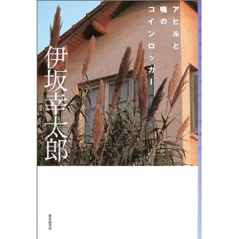

- 원서
- : 2003/11 (東京創元社), 2006/12/22 (創元推理文庫)
- 번역
- : 2006/06/19 (황매)
- 옮긴이
- :
- 페이지
- :
칠드런 [チルドレン]
- 원서
- : 2004/05 (講談社), 2007/05/15 (講談社文庫)
- 번역
- : 2005/01/15 (작가정신)
- 옮긴이
- :
- 페이지
- :
그래스호퍼 [グラスホッパ一]
- 원서
- : 2004/07 (角川書店), 2007/06/23 (角川文庫)
- 번역
- : 2009/12/07 (랜덤하우스)
- 옮긴이
- :
- 페이지
- :
라이프 (비밀) [ライフ (秘密。私と私のあいだの十二話)]
- 원서
- : 2005/03 (メディアファクトリー)
- 번역
- : 2006/03/16 (행복한책읽기)
- 옮긴이
- :
- 페이지
- :
사신치바 [死神の精度]


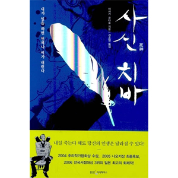
- 원서
- : 2005/06 (文藝春秋), 2008/02/08 (文春文庫)
- 번역
- : 2006/05/25 (웅진지식하우스)
- 옮긴이
- :
- 페이지
- :
투명한북극곰 (ILoveYou) [透明ポーラーベア (ILoveYou)]

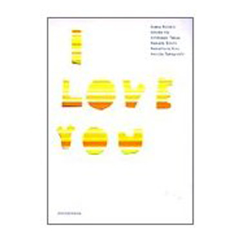
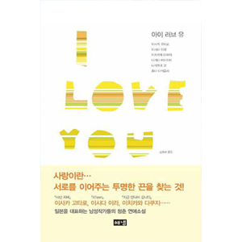
- 원서
- : 2005/07 (祥伝社), 2007/09/03 (祥伝社文庫)
- 번역
- : 2007/09/05 (해냄출판사)
- 옮긴이
- :
- 페이지
- :
마왕 [魔王]
- 원서
- : 2005/10 (講談社), 2008/09/12 (講談社文庫)
- 번역
- : 2006/08/25 (웅진지식하우스)
- 옮긴이
- :
- 페이지
- :
사막 [砂漠]
- 원서
- : 2005/12 (実業之日本社), 2008/08/01 (実業之日本社), 2010/6/29 (新潮文庫)
- 번역
- : 2007/05/10 (황매)
- 옮긴이
- :
- 페이지
- :
종말의바보 [終末のフール]

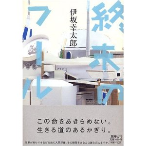
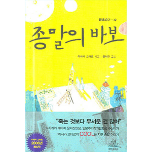
- 원서
- : 2006/03/26 (集英社), 2009/06/26 (集英社文庫)
- 번역
- : 2006/08/31 (랜덤하우스코리아)
- 옮긴이
- :
- 페이지
- :
명랑한갱의일상과습격 [陽氣なギャングの日常と襲擊]
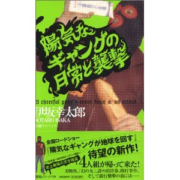
- 원서
- : 2006/05/10 (祥伝社)
- 번역
- : 2007/10/05 (은행나무)
- 옮긴이
- :
- 페이지
- :
피쉬스토리 [フィッシュスト一リ一]
- 원서
- : 2007/01/31 (新潮社)
- 번역
- : 2007/05/30 (웅진지식하우스)
- 옮긴이
- :
- 페이지
- :
골든슬럼버 [ゴールデンスランバー] [Remote Control]
- 원서
- : 2007/11/30 (新潮社), 2010/10/20 (講談社インタ-ナショナル)
- 번역
- : 2008/06/10 (웅진지식하우스)
- 옮긴이
- :
- 페이지
- :
Re-born 시작의 한 걸음 (나머지 전부 바캉스) [Re-born はじまりの一歩 (残り全部バケーション)]
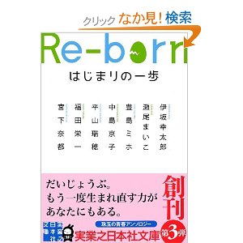
- 원서
- : 2008/03/19 (実業之日本社), 2010/12/01 (実業之日本社文庫)
Story Seller vol.1 (首折り男の周辺) (잡지, 문고본)

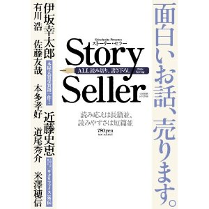
- 원서
- : 2008/04/10 (新潮社), 2009/01/28 (新潮文庫)
實驗4號 後藤を待ちながら (DVD북)
모던타임스 [モダンタイムス] (원서 2권 단행본, 상하 분리)
- 원서
- : 2008/10/16 (講談社), 2008/10/16 (講談社), 2011/10/14 (講談社), 2011/10/14 (講談社)
- 번역
- : 2009/08/20 (웅진지식하우스)
- 옮긴이
- :
- 페이지
- :
검문 [検問] (잡지, 문고본)
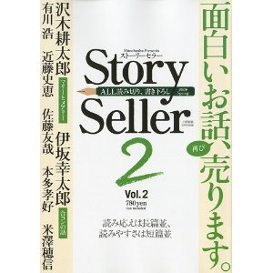

- 원서
- : 2008/07 (新潮社), 2009/06/05 (徳間文庫)
Story Seller vol.2 (合コンの話) (잡지, 문고본)
- 원서
- : 2009/04/10 (新潮社), 2010/01/28 (新潮文庫)
왕을 위한 팬클럽은 없다 (어느 왕) [あるキング]
- 원서
- : 2009/08/26 (徳間書店)
- 번역
- : 2010/10/25 (웅진지식하우스)
- 옮긴이
- :
- 페이지
- :
SOS의 원숭이 [ＳＯＳの猿]

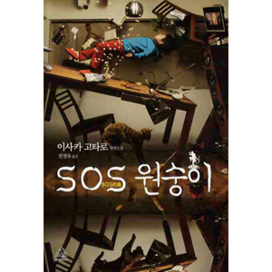
- 원서
- : 2009/11/25 (中央公論新社)
- 번역
- : 2010/07/23 (랜덤하우스)
- 옮긴이
- :
- 페이지
- :
蝦蟇倉市事件1
오파더 [オー！ファーザー]
- 원서
- : 2010/03/26 (新潮社)
- 번역
- : 2011/07/20 (북홀릭)
- 옮긴이
- :
- 페이지
- :
바이바이 블랙버드 [バイバイ、ブラックバード] (원서 2권 다 단행본)

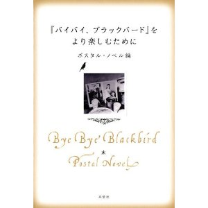

- 원서
- : 2010/06/30 (双葉社), 2010/06/30 (双葉社)
- 번역
- : 2011/06/10 (랜덤하우스)
- 옮긴이
- :
- 페이지
- :
마리아비틀 [マリアビートル]
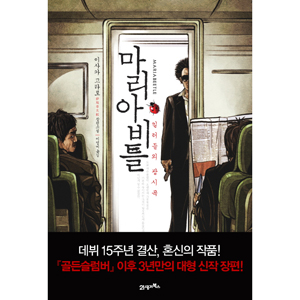
- 원서
- : 2010/09/23 (角川書店)
- 번역
- : 2011/06/28 (21세기북스)
- 옮긴이
- :
- 페이지
- :
クリスマスを探偵と
- 원서
- : 2010/11/26 (文藝別冊 伊坂幸太郎)
3652 (伊坂幸太郞エッセイ集)
MOVIE
MOVIE
STAGE
COMIC
[영화] 명랑한 갱이 지구를 움직인다
원문제목 : 陽気なギャングが地球を回す
영문제목 : A Cheerful Gang Turns The Earth
다름 이름 (AKA) : 활기찬 갱이 지구를 움직인다
장르 : 코미디 / 범죄 / 로맨스
상영시간 : 92분
제작년도 : 2006년
국내개봉 : 2007년 11월 08일
일본개봉 : 2006년 05월 13일
감독 : 마에다 테츠
출연:
1. 나루세 [成瀬] - 오오사와 타카오
2. 유키코 [雪子] - 스즈키 쿄카
3. 쿠온 [久遠] - 마츠다 쇼타
4. 히비키노 [響野] - 사토 코이치
5. 지미치 [地道] - 오오쿠라 코지
6. 쇼코 [祥子] - 카토 로사
7. 신이치 [慎一] - 미우라 토모히로
8. 아카지마 [赤嶋] - 나카야마 유이치로
9. 타나카 [田中] - 후루타 아라타
10. 쿠니모토 [国元] - 오오스기 렌
11. 우루시하라 [漆原] - 사사이 에이스케
12. 카모우치 [鴨打] - 마츠오 스즈키
13. 하야시 [林] - 키노시타 호우카
14. 아사쿠라 [朝倉] - 미츠이시 켄
[영화] 칠드런
원문제목 : チルドレン
영문제목 : CHiLDREN
장르 : 코미디 / 스릴러
제작년도 : 2006년
일본개봉 : 2006년 11월 04일
감독 : 미나모토 타카시
각본 : 미나모토 타카시
출연 :
1. 무토 슌스케 [武藤俊介] - 사카구치 켄지
2. 진나이 타츠야 [陣内達也] - 오오모리 나오
3. 아오키 미하루 [青木美春] - 코니시 마나미
4. 나가세 마사토 [永瀬政人] - 카세 료
5. 키하라 시로 [木原志朗] - 미우라 하루마
6. 키하라 슈고로 [木原周五郎] - 쿠니무라 준
7. 오사나이 코이치 [小山内光一] - 코바야시 타카시
8. 마지마 시게코 [間島茂子] - 와타나베 노리코
9. 아오키 료헤이 [青木良平] - 하세가와 하츠노리
[영화] 집오리와 들오리의 코인로커
원문제목 : アヒルと鴨のコインロッカー, Ahiru to kamo no koinrokka
영문제목 : The Foreign Duck, the Native Duck and God
장르 : 드라마 / 미스테리
상영시간 : 110분
제작년도 : 2007년
국내개봉 : 2008년 08월 28일
일본개봉 : 2007년 06월 23일
감독 : 나카무라 요시히로
주제곡 : Blowin' In The Wind (by 밥 딜런)
출연 :
1. 시이나 [椎名] - 하마다 가쿠
2. 카와사키 [河崎] - 에이타
3. 코토미 [琴美] - 세키 메구미
4. 레이코 [麗子] - 오오츠카 네네
5. 수수께끼의 남자 - 마츠다 류헤이
6. 도르지 - 타무라 케이
7. 시이나의 어머니 - 키무라 미도리코
8. 시이나의 아버지 - 나기라 켄이치
9. 관서사투리 학생 – 후지시마 리쿠야
10. 사토 - 오카다 마사키
[영화] 스위트 레인 - 사신의 정도
원문제목 : Sweet Rain 死神の精度
다름 이름 (AKA) : 사신 치바
장르 : 드라마 / 판타지
제작년도 : 2008년
일본개봉 : 2008년 03월 22일
감독 : 카케히 마사야
출연 :
1. 치바 (Chiba) - 금성무
2. 후지키 카즈에 (Kazue Fujiki) - 코니시 마나미
3. 카즈에 (Kazue) - 후지 스미코
4. 후지타 토시유키 (Toshiyuki Fujita) - 미츠이시 켄
5. 아쿠츠 신지 (Shinji Akutsu) - 이시다 타쿠야
6. 아오야마 (Aoyama) - 무라카미 준
7. 타케코 (Takeko) - 오쿠다 에리카
8. 오오마치 켄타로 (Kentaro Ohmachi) - 미츠이시 켄
9. 야쿠자 [ヤクザ] - 타나카 테츠지
[영화] 피쉬스토리
원문제목 : フィッシュストーリー
영문제목 : Fish Story
장르 : 드라마
국내등급 : 12세 이상
상영시간 : 112분
제작년도 : 2009년
국내개봉 : 2009년 07월 30일
일본개봉 : 2009년 03월 20일
감독 : 나카무라 요시히로
출연 :
1. 시게키 (Shigeki) - 이토 아츠시
2. 고로 (Goro) - 코라 켄고
3. 다치바나 아사미 (Masami) - 타베 미카코
4. 마사시 (Masashi) - 하마다 가쿠
5. 세가와 (Segawa) - 모리야마 미라이
6. 비디오가게주인 - ?
7. 데쓰오 - 시부카와 키요히코
8. 료지 - 오오카와우치 토시미츠
9. 다니 - 마시마 히데카즈
10. 시게키 애인 - 에구치 노리코
11. 친구1 - 야마나카 타카시
12. 친구2 - 나미오카 카즈키
13. 소개팅여 - 타카하시 마이
14. ? - 이시마루 켄지로
15. 오카자키 - 오오모리 나오
16. 나카무라 유지
17. 아시카와 마코토
18. 노나카 이사오
19. 오타니 에이코
20. 타무라 케이
21. 쿠사무라 레이코
22. 우에다 코이치
[영화] 중력삐에로
원문제목 : 重力ピエロ
영문제목 : A Pierrot
장르 : 미스터리, 드라마
상영시간 : 119 분
해외홈페이지 : jyuryoku-p.com
감독 : 모리 준이치
출연 :
1. 오쿠노 이즈미 - 카세 료
2. 오쿠노 하루 - 오카다 마사키
3. 오쿠노 마사시 - 코히나타 후미요
4. 오쿠노 리에코 - 스즈키 쿄카
5. 나츠코 - 요시타카 유리코
6. 야마우치 - 오카다 요시노리
7. 카츠라기 유키오 - 와타베 아츠로
[영화] 러시라이프
원문제목 : ラッシュライフ
영문제목 : Lush Life
장르 : 미스터리, 드라마
상영시간 : 122 분
홈페이지 : www.fnm.geidai.ac.jp/lushlife/
1. 쿠로자와 - 사카이 마사토
2. 쿄코 - 테라지마 시노부
3. 카와라자키 - 단 지로
4. 토요타 - 이타오 이츠지
5. 이민지
6. 후카미 모토키
7. 타케시마 야스나리
8. 나가이 츠토오
9. 츠츠이 마리코
10. 시오미 산세이
11. 시오야 슌
12. 오오타카 아키라
13. 타무라 타이지로
14. 시게마츠 오사무
15. 콘도 료헤이
[영화] 골든슬럼버
원문제목 : ゴールデンスランバー
영문제목 : Golden Slumber, 2009
장르 : 스릴러
한국개봉 : 2010년 08월 26일
국내등급 : 12세 이상
상영시간 : 139분
감독 : 나카무라 요시히로
출연 :
1. 아오야기 - 사카이 마사토
2. 하루코 - 타케우치 유코
3. 모리타 - 요시오카 히데타카
4. Kill-O - 하마다 가쿠
5. 이와사키 - 시부카와 키요히코
6. 호도카야 - 에모토 아키라
7. 아오야기 히라카즈 - 이토 시로
8. 린카 - 칸지야 시호리
9. 사사키 - 카가와 테루유키
10. 오노 카즈오 - 게키단 히토리
11. 토도로키 시즈오 - 벤가르
12. 히구치 노부유키 - 오오모리 나오
13. 이노우에 코우메 - 아이부 사키
14. 고바토자와 - 나가시마 토시유키
15. 경찰 - 이시마루 켄지로
16. 츠루타 아미 - 소닌
17. 호도가야 - 덴덴
18. 도도로키의 아들 - 타키토 켄이치
19. ? - 키노시타 타카유키
20. 아오야기 어머니 - 키우치 미도리
21. 아오야기 아버지 - 류 라이타
영화 다수 출연 배우
하마다 가쿠 - 3작품 (집오리와 들오리의 코인로커, 골든슬럼버, 피쉬스토리)
오오모리 나오 - 3작품 (칠드런, 피쉬스토리, 골든슬럼버)
사카이 마사토 - 2작품 (골든슬럼버, 러쉬라이프)
카세료 - 2작품 (중력삐에로, 칠드런)
코니시 마나미 - 2작품 (칠드런, 사신치바)
시부카와 키요히코 - 2작품 (피쉬스토리, 골든슬럼버)
이시마루 켄지로 - 2작품 (골든슬럼버, 피쉬스토리)
타무라 케이 - 2작품 (집오리와 들오리의 코인로커, 피쉬스토리)
[만화] 오듀본의 기도
원제 : オーデュボンの祈り
출판사 : 新潮社
그림 : 키무라 테츠야 (木村 哲也)
[만화] 명랑한 갱이 지구를 움직인다
원제: 陽気なギャングが地球を回す
출판사 : 講談社
그림 : 코노 유코 (耕野 裕子)
[만화] 종말의 바보
원제 : 終末のフール
출판사 : 集英社 ヤングジャンプコミックス
국내출판사 : 서울문화사
그림 : 시오즈카 마코토 (塩塚 誠)
[만화] 마왕 JUVENILE REMIX 1~10 (완)
원제 : 魔王 JUVENILE REMIX
출판사 : 小学館
국내출판사 : 대원씨아이
그림 : 오스가 메구미 (大須賀 めぐみ)
[만화] 그래스호퍼 1~3 (완)
원제 : グラスホッパー
출판사 : KADOKAWA CHARGE COMICS
국내출판사 : 대원씨아이
그림 : 이다 히로토(井田 ヒロト)
[만화] 하마다청년 혼도스카
원제 : 浜田青年ホントスカ
출판사 : スクウェア・エニックス『Gファンタジー＋＋』
그림 : 佃 範奈
[만화] 왈츠 1~5 (진행)
원제 : Waltz
출판사 : 小学館
국내출판사 : 대원씨아이
그림 : 오스가 메구미 (大須賀 めぐみ)


 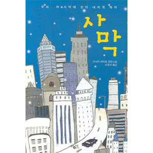
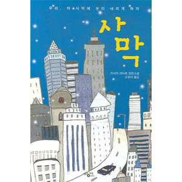